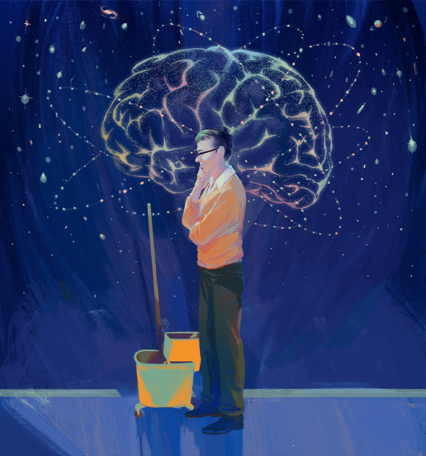
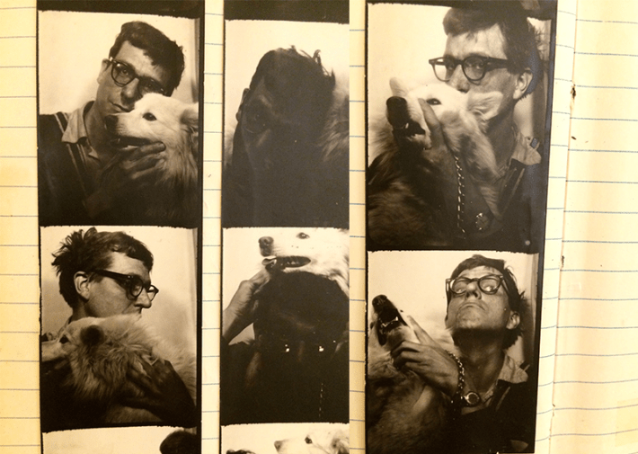

Amanda Gefter has lived with Peter Putnam in her head for 12 years now. “I feel like I know him better than the actual people I know,” she said to me with a peal of laughter, as if confessing a secret that she had kept inside her for so long.
Until Gefter’s article, “Finding Peter Putnam,” was published in Nautilus on June 17, next to nobody had heard of the physicist who worked out the logic of the human mind, an issue critical to physicists puzzling over how the mind shapes the nature of reality. The few scientists who did know and champion Putnam are history’s marquee names: John Archibald Wheeler, Albert Einstein, Niels Bohr.
Putnam was killed in 1987 by a drunk driver in a small town in Louisiana where he worked as a janitor. When Putnam died, his theory of the mind was buried in thousands of pages that were boxed up in the tiny home on the bayou he shared with his partner, Claude DeBrew. Coleman Clarke, who had made friends with Putnam in the 1960s, rescued Putnam’s papers, personal diaries, and keepsakes, and moved them across the country, finally keeping them in a storage unit near his home in Rochester, New York.When Clarke first opened the storage-unit door for Gefter, she couldn’t believe what she saw.
“Rows of filing cabinets, all neatly labeled, giving the whole place the appearance of a professional archive,” she writes. “I looked around, stunned. It was the entire library of Putnam’s unpublished writings. His theory, his life. The whole long-lost thing.”
And so began Gefter’s years of reading and trying to understand what Putnam was saying. It was an undertaking that had Gefter questioning her own sanity. She felt like the first reader of James Joyce’s Finnegans Wake must have felt: What is this?
Why did Gefter, through frustration and exhaustion, stick with trying to decipher Putnam? Because that’s what extraordinary writers with a vision do. At least that’s what I say. What does Gefter herself say?
MY BRILLIANT FRIEND: After years of reading Peter Putnam’s diaries, Amanda Gefter says, “I feel like I know every embarrassing thing that ever happened to him, every crush and fantasy he ever had. He’s so hyperreal to me that it feels like he’s my imaginary friend.”
Let me start with this, Amanda. Did you like Putnam?
[Laughs]There were periods that I would say I sort of hated him and felt like he ruined my life. I’ve gone through the full range of human emotions with him. He’s a very frustrating character in a lot of ways, and his complicated writing made it as difficult as possible for me to do this. Imagine me pulling my hair, screaming, and throwing things.
But it got easier the more I got to know what he went through. I have so much empathy for him as a person. He’s a very lovable character. Which is frustrating because he didn’t get what he wanted, but he gave everybody else what they wanted. He was so kind to other people, and so how can you really be mad at that? And that goes beyond doing things like giving $40 million to the Nature Conservancy.
One of his students, Kim Hopper, who I quote in the article, told me this story about a woman named Emma, who would push a shopping cart full of her belongings around Morningside Heights in Manhattan, where Putnam lived when he taught at the Union Theological Seminary. She also had a pet rabbit in the cart. She was known around the neighborhood and had all these delusions. She thought the CIA was after her. But Peter befriended her and read all her poetry. Sometimes she would show up during his class. Instead of turning her away, he would pause the class and run off to the teacher’s lounge and make her a plate of food and bring it to her and bring food for the rabbit. So, I would look at stuff like that. He had such a big heart.
One of your extraordinary accomplishments in the article is to explain clearly and accessibly what Putnam was saying about the workings of the mind. And yet you had to dig out the core of his theory from layers of scrambled prose that contained a haberdashery of references from science and philosophy. You could have easily thought this guy was a crackpot and walked away. But something kept you going. What was that something?
On the one hand, it’s my own stubbornness and insanity. But on the other hand, it was getting to know people like Coleman Clarke and Robert Fuller, who knew Putnam and have carried his story with them for their whole lives. I trusted them. And I really trusted Wheeler’s judgment. I could tell from the way Wheeler writes about Peter in his notebooks and in his letters to him, that he really cared about him, and he really wanted these ideas out into the world. Peter had interactions with Bohr, an extensive correspondence with physicist David Bohm, and with Einstein. All these people thought highly of him. And that gave him credibility. But if I had just read the papers and I didn’t know anything about him, I would have thought he was crazy.
I like to believe there are answers to the biggest mysteries stashed away in someone’s storage unit.
Aside from the famous scientists, did you have an epiphany yourself when you thought, “Wow, Putnam is on to something?”
I did. The epiphany was, he knows what he’s talking about. It’s not some crackpot stuff. There were thousands of pages, and they were very self-consistent. I didn’t know what it meant, but I could tell he knew what it meant. He did write about things that I know about, like physics. So, I could tell he knew what he was talking about.
I read other things, more modern things, books about the theory of the embodied mind, which came out in the ’90s. I remember thinking, oh, this is sort of what Putnam was saying. This is an approach to the mind where it’s not representational, it’s active. It involves the body and motor behavior. I’m seeing the seeds of that in what Putnam was doing. So that helped, too.
But then the big epiphany was: This is a theory of induction. When I realized that was at the core of the whole thing, I went back and reread the papers I’d already read 100 times, and they all made sense. At the time, it was thought the brain was doing something computational, like a Turing machine. And a Turing machine does deductive logic. Math is deductive logic. It’s anything where you have some set of axioms or premises, and then you have rules of how things can be moved around, and then you can derive certain knowledge.

Illustration by Cornelia Li.
Whereas induction is: How do you come up with the premises in the first place? And usually there’s not a formalized theory. It’s like intuition. It’s the fuzzy stuff that humans do that we don’t know how to have computers do, or don’t even know if computers can do it. There have been formal versions of how to do induction, for better or worse, but there’s never really been a theory of how induction happens in the first place in the brain.
What I realized was Peter was giving a causal, semi-mathematical story of how induction happens, kind of like Turing’s original paper describing a computer. If you follow all these steps, you could perform any act of deduction. And Putnam’s thing is, here are all the steps and all the things you would need. If you have this system in place, it will perform induction. And nobody had ever done that before.
Even today, with things like ChatGPT, we ask, does it really understand? Can it come up with anything new or is it just spitting back combinations of things it’s already seen? And when that happens in conversations, somebody eventually says we don’t even know how humans do it. And that’s the end of the conversation.
I thought Peter could be right, he could be wrong, but here’s a theory of how humans do it. The brain carries out this program and here’s what it means for how we understand consciousness in the mind, here’s what it means for how we understand what we do in art and relationships. That was a big epiphany.
Was there also something personal about Putnam’s work to you?
It was an issue I was deeply interested in. What is the mind? How does the mind work? Why is there subjective experience? The “hard problem” of consciousness is deeply fascinating. Personally, I’ve always come at that from a physics side. My interest originally is physics and foundations of quantum mechanics. You are always bumping up against this question about observers. What is an observer? What are we even talking about?
This was why Wheeler was interested in Peter too. Peter wasn’t a brain scientist who wanted to know how consciousness arises. He was a physicist who wanted to understand the nature of reality. He was coming at questions that really kept me up at night. My feeling was, what if he really has the answer? I like to believe there are answers to the biggest mysteries stashed away in someone's storage unit. I want to live in that world.
What made Putnam the person to figure out these big mysteries?
He had this feeling that people who are on the fringes of society, which for him was being gay, was sort of living in contradiction with mainstream society, having to grapple with contradictions that other people didn’t have to deal with. He felt those people are more likely to get to something new. Not because they’re smarter, more capable, or anything like that, but because they’re confronted in a very visceral way with certain contradictions that other people don’t have to tackle.
What do you think you learned about yourself in 12 years of writing about Putnam?
I think I learned my stubbornness does not have limits. But honestly, I did learn so much about how to think about the mind and our place in the world, and how we relate to the environment. That was an interesting thing, too. He left all his money to protect natural ecosystems. And that seems a little out of the blue. When he was alive, he contributed to art and civil and gay rights. He didn’t talk a ton about the environment. And so, I was like, where did that come from? But you realize what he’s doing is showing that what we call mind and consciousness is very much just living. It’s what it means to live. With everything going on with AI and large language models and all this stuff now, my work on Peter has shaped how I’m reacting to all of that. I’m seeing that living language is very different from the kind of fossilized language that happens in a large language model.
Do you have a favorite item from all of Putnam’s stuff in the storage unit?
I think my favorite are photos taken in a photo booth with his dog. You know, those strips of photos. They’re of him making silly faces with his dog. 

Photo courtesy of Coleman Clarke.